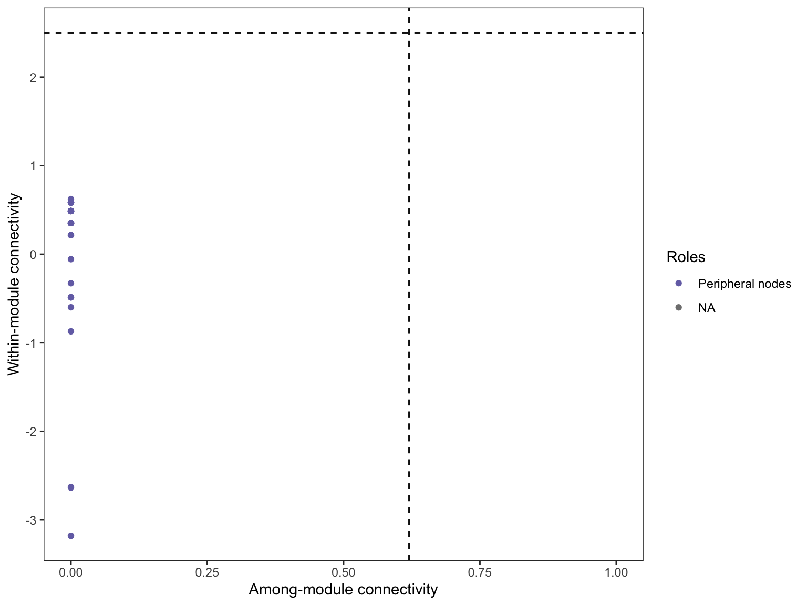
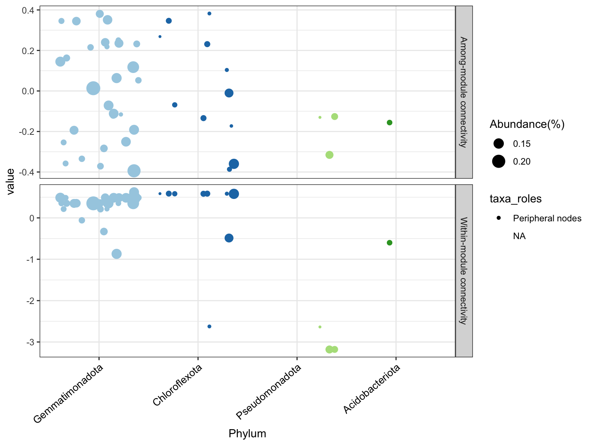

6 网络分析
6.1 概述
微生物共现网络（Co-occurrence Network）分析通过推断微生物类群间的统计关联，揭示微生物群落内的潜在相互作用关系。网络分析将复杂的群落数据转化为直观的图结构，节点代表微生物类群，边代表类群间的关联（正相关或负相关）。
6.1.1 网络分析的生态学意义
- 相互作用推断：正相关可能暗示互利共生、交叉喂养或共同的环境偏好；负相关可能暗示竞争、拮抗或生态位分化
- 关键物种识别：发现网络中的核心节点（Hub nodes）和关键物种（Keystone species）
- 群落稳定性：通过网络拓扑特征评估群落的稳定性和鲁棒性
- 功能模块：识别功能相关的微生物模块（Modules）
6.1.2 网络构建方法
| 方法 | 原理 | 特点 |
|---|---|---|
| 相关性网络 | Spearman/Pearson 相关 | 简单直观，计算快速 |
| SparCC | 稀疏相关性 | 校正组成性效应 |
| SPIEC-EASI | 稀疏逆协方差 | 考虑条件独立性，去除间接效应 |
| WGCNA | 加权相关网络 | 适合发现模块结构 |
6.1.3 网络拓扑指标
| 指标 | 含义 | 生态学解释 |
|---|---|---|
| 度（Degree） | 节点的连接数 | 连接度高的可能是关键物种 |
| 介数中心性（Betweenness） | 作为桥梁的频率 | 控制信息流动的关键节点 |
| 模块内连接度（Zi） | 在模块内的连接程度 | 模块核心或外围 |
| 模块间连接度（Pi） | 与其他模块的连接程度 | 网络连接器或模块特化者 |
6.1.4 节点分类（基于 Zi 和 Pi）
- 网络枢纽（Network hubs）：Zi > 2.5, Pi > 0.62，在模块内外都高度连接
- 模块枢纽（Module hubs）：Zi > 2.5, Pi < 0.62，主要连接模块内部
- 连接器（Connectors）：Zi < 2.5, Pi > 0.62，连接不同模块
- 外围节点（Peripherals）：Zi < 2.5, Pi < 0.62，大部分节点属于此类
6.2 流程
在 microeco 包中，网络分析通过 trans_network 类实现，主要流程如下：
- 初始化对象：指定相关计算方法和过滤阈值
- 构建网络：计算相关性并构建网络
- 模块划分：使用聚类算法识别网络模块
- 拓扑分析：计算网络属性和节点角色
- 可视化：绘制网络图并导出到外部软件
6.3 构建 microtable 对象
这里使用 microeco 软件包进行数据分析。
首先需要从数据保存的目录读取数据，并构建 microtable 对象。
PATH = "data/amplicon/processed"
list.files(PATH, full.names = TRUE)#> [1] "data/amplicon/processed/asv.fasta"
#> [2] "data/amplicon/processed/asvtab.csv"
#> [3] "data/amplicon/processed/metadata.csv"
#> [4] "data/amplicon/processed/taxtab.csv"metadata_file = file.path(PATH, "metadata.csv")
otu_table_file = file.path(PATH, "asvtab.csv")
tax_table_file = file.path(PATH, "taxtab.csv")
sequence_file = file.path(PATH, "asv.fasta")6.3.1 载入包
library(tidyverse)
library(microeco)
theme_set(theme_bw())6.3.2 OTU 表
otu_table = read_csv(otu_table_file)
otu_table = column_to_rownames(otu_table, var = names(otu_table)[1])在 microeco 包（以及大多数 R 语言生物信息包）的规范中，microtable 对 otu_table 的格式有严格要求：行必须是 Taxa（ASV/OTU），列必须是 Samples。
如果你的数据正好反过来了（行是样品，列是 ASV），需要在传入 otu_table 之前，使用 t() 函数对其进行转置，并确保它仍然是一个 data.frame。
otu_table <- as.data.frame(t(otu_table))为了让你直观理解 microtable 的结构逻辑，可以参考下图的对应关系：
- OTU Table: 行名必须对接 Taxonomy Table 的行名（即 ASV ID）。
- OTU Table: 列名必须对接 Sample Table 的行名（即 Sample ID）。
6.3.3 Sample 表
sample_table = read_csv(metadata_file)
sample_table = column_to_rownames(sample_table, var = names(sample_table)[1])6.3.4 Taxonomy 表
taxon_table = read_csv(tax_table_file)
taxon_table = column_to_rownames(taxon_table, var = names(taxon_table)[1]) |>
mutate(Genus = if_else(str_detect(Genus, "Burkholderia"), "Burkholderia", Genus))6.3.5 构建对象
构建 microtable 对象。
mt = microtable$new(otu_table = otu_table, sample_table = sample_table, tax_table = taxon_table)
mt#> microtable-class object:
#> sample_table have 12 rows and 8 columns
#> otu_table have 7230 rows and 12 columns
#> tax_table have 7230 rows and 7 columns处理 Taxonmic 表格中的 NA 值。
- 删掉
Phylum == NA的 ASV（根本没比对上的垃圾序列）。
mt$tax_table = subset(mt$tax_table, !is.na(Phylum))
mt$tidy_dataset()- 为未知的 Genus 填充数据（自上级非 NA）。
# 该函数会自动查找分类表中的缺失值并填充
mt$tax_table <- tidy_taxonomy(mt$tax_table)
# 填充完成后，运行 tidy_dataset 同步一下
mt$tidy_dataset()6.4 实现
6.4.1 相关性网络构建
使用 Spearman 相关性构建共现网络是最常用的方法。
# 初始化 trans_network 对象
t1 = trans_network$new(
dataset = mt,
cor_method = "spearman",
filter_thres = 0.001,
tax_level = "Genus"
)参数说明：
cor_method = "spearman"：使用 Spearman 秩相关（对非正态分布稳健）filter_thres = 0.001：过滤相对丰度 < 0.1% 的分类群tax_level = "Genus"：在属水平构建网络
6.4.2 计算网络
# 构建网络，设置相关性阈值
t1$cal_network(
COR_p_thres = 0.01,
COR_cut = 0.6,
COR_optimization = FALSE
)
# 查看网络基本信息
t1$res_network#> IGRAPH cbf75c8 UNW- 49 503 --
#> + attr: name (v/c), taxa (v/c), Phylum (v/c), RelativeAbundance (v/n),
#> | label (e/c), weight (e/n)
#> + edges from cbf75c8 (vertex names):
#> [1] ASV5f2cb69b4d62--ASV8d45d97f57c1 ASV5f2cb69b4d62--ASV80a264755ead
#> [3] ASV5f2cb69b4d62--ASV3b5c3206737e ASV5f2cb69b4d62--ASVfb6534e8d2a0
#> [5] ASV5f2cb69b4d62--ASV3fb2a0fcae7d ASV5f2cb69b4d62--ASV86c713b402b1
#> [7] ASV5f2cb69b4d62--ASVa75e4fe1b306 ASV5f2cb69b4d62--ASV6e51124543c4
#> [9] ASV5f2cb69b4d62--ASV364507f2c1af ASV5f2cb69b4d62--ASV123596181742
#> [11] ASV5f2cb69b4d62--ASVb4604014a1ec ASV5f2cb69b4d62--ASV3e7d2a4331d6
#> [13] ASV5f2cb69b4d62--ASV86ce01c03c9c ASV5f2cb69b4d62--ASVcf135dfce25c
#> + ... omitted several edges参数说明：
COR_p_thres = 0.01：P 值阈值，仅保留 P < 0.01 的相关性COR_cut = 0.6：相关系数阈值，仅保留 |r| > 0.6 的边COR_optimization = TRUE可基于随机矩阵理论自动优化阈值
6.4.3 模块划分
使用社区检测算法将网络划分为功能模块。
# 使用 fast greedy 算法划分模块
t1$cal_module(method = "cluster_fast_greedy")
# 查看模块划分结果
table(t1$res_node_table$module)#> < table of extent 0 >6.4.4 网络可视化
6.4.4.1 在 R 中绘制网络图
require(ggraph)
# 使用 ggraph 方法绘制网络
t1$plot_network(
method = "ggraph",
node_color = "module",
node_label = "Genus",
node_size_range = c(3, 10)
)#> Error in `alg_fun()`:
#> ! unused argument (node_size_range = c(3, 10))图形元素说明：
- 节点颜色：所属模块
- 节点大小：连接度（Degree）
- 边的颜色：正相关（通常）vs 负相关
- 边的粗细：相关性强弱
6.4.4.2 导出到 Gephi
对于 publication-quality 的图形，建议导出到 Gephi 进行美化。
# 保存为 GEXF 格式（需要 rgexf 包）
t1$save_network(filepath = "network.gexf")6.4.5 网络拓扑分析
6.4.5.1 计算网络属性
# 计算网络拓扑属性
t1$cal_network_attr()
t1$res_network_attr#>
#> Vertex 49.0000000
#> Edge 503.0000000
#> Average_degree 20.5306122
#> Average_path_length 1.0757741
#> Network_diameter 3.0000000
#> Clustering_coefficient 0.9454859
#> Density 0.4277211
#> Heterogeneity 0.5377284
#> Centralization 0.2181122
#> Modularity 0.1891820关键指标解读：
- 平均度（Average degree）：每个节点的平均连接数
- 聚类系数（Clustering coefficient）：网络的聚集程度
- 平均路径长度：网络中任意两节点间的平均最短距离
- 模块化指数（Modularity）：模块划分的质量（>0.4 表示显著模块化）
6.4.5.2 节点角色分析
# 获取节点属性表
t1$get_node_table(node_roles = TRUE)
head(t1$res_node_table)#> name degree betweenness_centrality
#> ASV5f2cb69b4d62 ASV5f2cb69b4d62 29 0
#> ASV8d45d97f57c1 ASV8d45d97f57c1 30 0
#> ASV80a264755ead ASV80a264755ead 29 0
#> ASV8959eb50740b ASV8959eb50740b 3 0
#> ASVb03150ca3ed0 ASVb03150ca3ed0 10 1
#> ASVa4d6e43a78d0 ASVa4d6e43a78d0 3 0
#> closeness_centrality eigenvector_centrality Abundance module
#> ASV5f2cb69b4d62 0.02864384 0.95417502 0.2344011 M1
#> ASV8d45d97f57c1 0.03063871 0.98641443 0.2151080 M1
#> ASV80a264755ead 0.03040144 0.89085676 0.1862587 M1
#> ASV8959eb50740b 0.01626549 0.02469697 0.1294615 M1
#> ASVb03150ca3ed0 0.11147773 0.00000000 0.1597533 M2
#> ASVa4d6e43a78d0 0.01606384 0.02509474 0.1186430 M1
#> z p taxa_roles Kingdom Phylum
#> ASV5f2cb69b4d62 0.3514032 0 Peripheral nodes k__Bacteria p__Gemmatimonadota
#> ASV8d45d97f57c1 0.4871726 0 Peripheral nodes k__Bacteria p__Gemmatimonadota
#> ASV80a264755ead 0.3514032 0 Peripheral nodes k__Bacteria p__Gemmatimonadota
#> ASV8959eb50740b -3.1786013 0 Peripheral nodes k__Bacteria p__Pseudomonadota
#> ASVb03150ca3ed0 0.5838742 0 Peripheral nodes k__Bacteria p__Chloroflexota
#> ASVa4d6e43a78d0 -3.1786013 0 Peripheral nodes k__Bacteria p__Pseudomonadota
#> Class Order
#> ASV5f2cb69b4d62 c__Gemmatimonadia o__Gemmatimonadales
#> ASV8d45d97f57c1 c__Gemmatimonadia o__Gemmatimonadales
#> ASV80a264755ead c__Gemmatimonadia o__Gemmatimonadales
#> ASV8959eb50740b c__Gammaproteobacteria o__Lysobacterales
#> ASVb03150ca3ed0 c__Ktedonobacteria o__Ktedonobacterales
#> ASVa4d6e43a78d0 c__Gammaproteobacteria o__Lysobacterales
#> Family Genus Species
#> ASV5f2cb69b4d62 f__Gemmatimonadaceae g__ s__
#> ASV8d45d97f57c1 f__Gemmatimonadaceae g__ s__
#> ASV80a264755ead f__Gemmatimonadaceae g__ s__
#> ASV8959eb50740b f__Rhodanobacteraceae g__Rhodanobacter s__spathiphylli
#> ASVb03150ca3ed0 f__JG30-KF-AS9 g__ s__
#> ASVa4d6e43a78d0 f__Rhodanobacteraceae g__Rhodanobacter s__6.4.5.3 绘制节点角色图
# 绘制节点角色分类图
t1$plot_taxa_roles(use_type = 1)
图形解读： - X 轴（Pi）：模块间连通性，值越大表示与其他模块连接越多 - Y 轴（Zi）：模块内连通性，值越大表示在模块内部越核心 - 虚线将节点分为四类：网络枢纽、模块枢纽、连接器和外围节点
6.4.5.4 按分类学信息绘制
t1$plot_taxa_roles(use_type = 2)
6.4.6 边和邻接矩阵
# 获取边的属性
t1$get_edge_table()
head(t1$res_edge_table)#> node1 node2 label weight
#> 1 ASV5f2cb69b4d62 ASV8d45d97f57c1 + 0.9560647
#> 2 ASV5f2cb69b4d62 ASV80a264755ead + 0.8266212
#> 3 ASV5f2cb69b4d62 ASV3b5c3206737e + 0.7915392
#> 4 ASV5f2cb69b4d62 ASVfb6534e8d2a0 + 0.9228070
#> 5 ASV5f2cb69b4d62 ASV3fb2a0fcae7d + 0.9017544
#> 6 ASV5f2cb69b4d62 ASV86c713b402b1 + 0.9017544# 获取邻接矩阵
t1$get_adjacency_matrix()6.4.7 子网络提取
可以提取特定模块或节点的子网络进行进一步分析。
# 提取模块 M1 的子网络
sub_network <- t1$subset_network(
node = t1$res_node_table %>%
base::subset(module == "M1") %>%
rownames,
rm_single = TRUE
)
# 查看子网络
sub_network#> IGRAPH 6b72093 UNW- 34 449 --
#> + attr: name (v/c), taxa (v/c), Phylum (v/c), RelativeAbundance (v/n),
#> | module (v/c), label (e/c), weight (e/n)
#> + edges from 6b72093 (vertex names):
#> [1] ASV5f2cb69b4d62--ASV8d45d97f57c1 ASV5f2cb69b4d62--ASV80a264755ead
#> [3] ASV5f2cb69b4d62--ASV3b5c3206737e ASV5f2cb69b4d62--ASVfb6534e8d2a0
#> [5] ASV5f2cb69b4d62--ASV3fb2a0fcae7d ASV5f2cb69b4d62--ASV86c713b402b1
#> [7] ASV5f2cb69b4d62--ASVa75e4fe1b306 ASV5f2cb69b4d62--ASV6e51124543c4
#> [9] ASV5f2cb69b4d62--ASV364507f2c1af ASV5f2cb69b4d62--ASV123596181742
#> [11] ASV5f2cb69b4d62--ASVb4604014a1ec ASV5f2cb69b4d62--ASV3e7d2a4331d6
#> [13] ASV5f2cb69b4d62--ASV86ce01c03c9c ASV5f2cb69b4d62--ASVcf135dfce25c
#> + ... omitted several edges6.4.8 分类群间连接分析
计算不同分类群之间的连接数量。
# 计算门水平间的连接数
t1$cal_sum_links(taxa_level = "Phylum")
# 绘制弦图（需要 chorddiag 包）
t1$plot_sum_links(
plot_pos = TRUE,
plot_num = 10,
color_values = RColorBrewer::brewer.pal(10, "Paired")
)6.4.9 其他网络构建方法
6.4.9.1 Bray-Curtis 网络
t1 <- trans_network$new(
dataset = mt,
cor_method = "bray",
filter_thres = 0.001
)
t1$cal_network(network_method = "COR")
t1$cal_module()
t1$plot_network(node_color = "Phylum", node_label = "Genus")6.4.9.2 WGCNA 方法
library(WGCNA)
t1 <- trans_network$new(
dataset = mt,
cor_method = "spearman",
use_WGCNA_pearson_spearman = TRUE,
filter_thres = 0.001
)
t1$cal_network()
t1$cal_module()
t1$plot_network()6.5 结果
6.5.1 网络整体特征
基于网络拓扑属性的分析结果：
网络规模： - 节点数：网络中包含的分类群数量 - 边数：显著相关的类群对数 - 连接密度：边数与理论最大边数的比值
网络结构： - 模块化程度：高模块化指数（>0.4）表明网络具有显著的模块结构，暗示存在功能分化的微生物群组 - 小世界特性：高聚类系数和短平均路径长度表明网络具有小世界特性，信息传播效率高 - 度分布：符合幂律分布（无标度网络）表明存在少数高度连接的枢纽节点
6.5.2 关键节点识别
基于节点角色分析的结果：
模块枢纽（Module hubs）：
- 在各自模块内部高度连接
- 可能是模块内的核心功能执行者
- 对模块的稳定性具有重要影响
连接器（Connectors）：
- 连接不同模块的桥梁节点
- 促进模块间的物质和信息交换
- 对维持网络整体连通性至关重要
网络枢纽（Network hubs）（如果存在）：
- 在模块内外都高度连接
- 可能是群落中的关键物种（Keystone species）
- 其丧失可能对群落功能产生重大影响
6.5.3 模块的功能推断
模块的生态学意义：
- 功能特化：
- 同一模块内的分类群可能具有相似的功能特征或生态位偏好
- 不同模块可能执行不同的生态系统功能
- 环境响应：
- 比较不同处理组的网络模块组成，可以识别对处理敏感的微生物群组
- 模块丰度或结构的变化可能反映功能群落的重组
- 稳定性分析：
- 模块内部的高连接度可能增强群落的稳定性
- 模块间的连接可能影响群落的恢复力和适应性
6.5.4 网络与处理效应的关系
可能的发现模式：
- 网络复杂度的变化：
- 若某处理组的网络边数减少，可能表明处理简化了群落结构
- 若连接度增加，可能表明处理促进了微生物间的相互作用
- 模块重组：
- 处理可能导致分类群在网络中重新组织，形成新的模块结构
- 某些模块可能在特定处理中消失或新出现
- 关键节点的变化：
- 不同处理组可能具有不同的网络枢纽
- 关键物种的转换可能反映群落功能状态的变化
6.5.5 与其他分析的关联
与差异分析的联系：
- 在网络中处于核心位置（高连接度）的分类群，如果在差异分析中也显著富集，则更可能是关键功能类群
- 连接器节点即使丰度不高，也可能通过影响模块间交流而发挥重要作用
与 Beta 多样性的联系：
- 网络拓扑的差异可以解释 Beta 多样性观察到的模式
- 组间网络结构的差异可能比单纯的组成差异更能反映功能变化
6.5.6 研究局限性与注意事项
- 相关性不等于因果：
- 网络中的边仅表示统计关联，不代表直接的生物学相互作用
- 相关可能是由共同的环境偏好或间接效应引起的
- 组成性效应：
- 基于相对丰度的相关性分析存在组成性效应
- 建议使用 SparCC 或 SPIEC-EASI 等方法进行验证
- 阈值依赖性：
- 网络结构对相关性和 P 值阈值敏感
- 建议使用不同阈值进行敏感性分析
- 时间动态：
- 横截面数据构建的网络无法反映相互作用的动态变化
- 时间序列分析可以提供更丰富的信息
6.6 小提示
microeco 包的使用文档参见：https://chiliubio.github.io/microeco_tutorial。
- 网络构建前建议先过滤低丰度分类群（
filter_thres），以减少噪声和计算量 COR_optimization = TRUE可基于随机矩阵理论自动寻找最佳相关性阈值- 使用 Gephi 软件可以获得更美观的网络可视化效果
- 节点角色分类基于 Guimerà & Amaral (2005) 的方法，广泛应用于生态网络研究